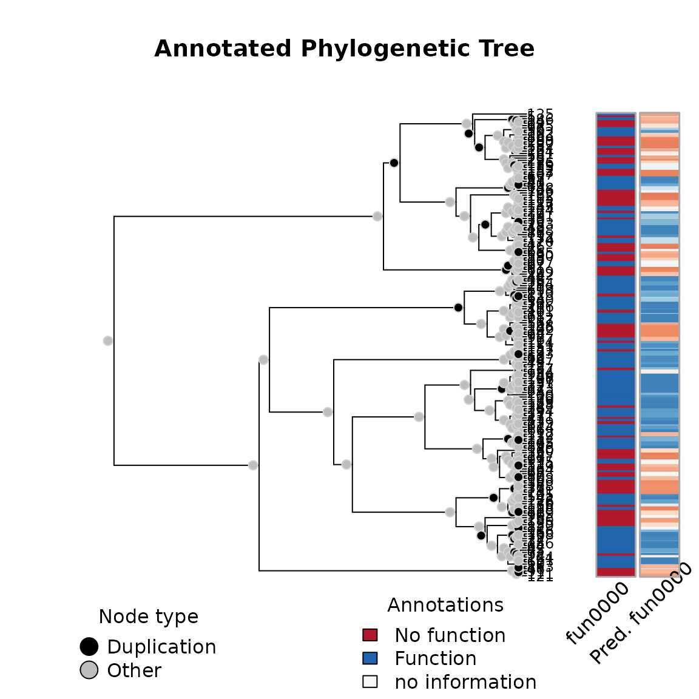

Simulation and Inference
George G. Vega Yon
August 18, 2021
Source:vignettes/example.Rmd
example.RmdThis is a simple example of simulation, inference, and prediction
with the aphylo R package.
Simulation

The simulation function generates an aphylo class object
which is simply a wrapper containing:
- a 0/1 integer matrix (annotations),
- a
phylotree (from the ape package), and - some information about the tree and annotations.
If needed, we can export the data as follows:
# Edgelist describing parent->offspring relations
write.csv(x$tree, file = "tree.tree", row.names = FALSE)
# Tip annotations
ann <- with(x, rbind(tip.annotation, node.annotation))
write.csv(ann, file = "annotations.csv", row.names = FALSE)
# Event types
events <- with(x, cbind(c(tip.type*NA, node.type)))
rownames(events) <- 1:nrow(events)
write.csv(events, file = "events.csv", row.names = FALSE)Inference
To fit the data, we can use MCMC as follows:
ans <- aphylo_mcmc(x ~ psi + mu_d + mu_s + Pi)## Warning: While using multiple chains, a single initial point has been passed via
## `initial`: c(0.1, 0.05, 0.9, 0.5, 0.1, 0.05, 0.5). The values will be recycled.
## Ideally you would want to start each chain from different locations.## Convergence has been reached with 10000 steps. Gelman-Rubin's R: 1.0392. (500 final count of samples).
ans##
## ESTIMATION OF ANNOTATED PHYLOGENETIC TREE
##
## Call: aphylo_mcmc(model = x ~ psi + mu_d + mu_s + Pi)
## LogLik: -108.7577
## Method used: mcmc (10000 steps)
## # of Leafs: 200
## # of Functions 1
## # of Trees: 1
##
## Estimate Std. Err.
## psi0 0.0673 0.0544
## psi1 0.0546 0.0384
## mu_d0 0.2221 0.1263
## mu_d1 0.1273 0.0941
## mu_s0 0.1299 0.0420
## mu_s1 0.0616 0.0298
## Pi 0.3448 0.2577For goodness-of-fit analysis, we have a couple of tools. We can compare the predicted values with the observed values:
plot(ans)
We can also take a look at the surface of the posterior function
plot_logLik(ans)And we can also take a look at the prediction scores
ps <- prediction_score(ans)
ps # Printing## Prediction score (H0: Observed = Random)
##
## N obs. : 399
##
## Observed : 0.71 ***
## Random : NA
## P(<t) : 0.0000
## --------------------------------------------------------------------------------
## Values scaled to range between 0 and 1, 1 being best.
##
## Significance levels: *** p < .01, ** p < .05, * p < .10
## AUC 0.85.
## MAE 0.29.
plot(ps) # and plotting